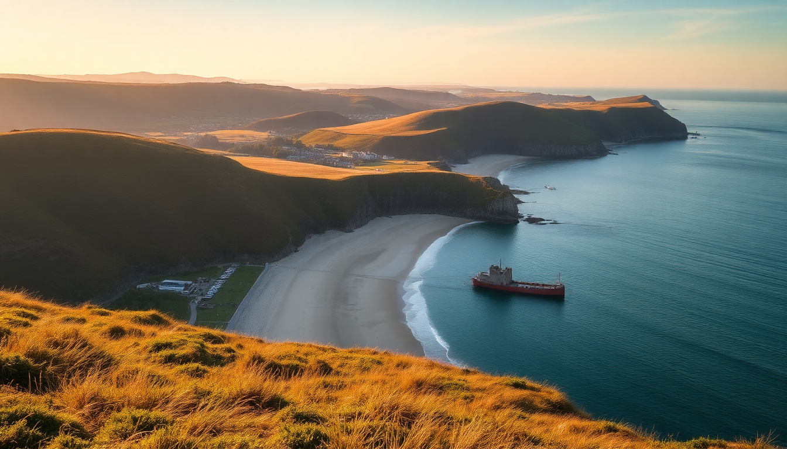

Best UK Beaches: Cornwall, Devon & Scottish Highlands

I spent three weeks driving the A30 through Cornwall, hugging the Devon coast, and braving the single-track roads of the Scottish Highlands. I swam in freezing water, ate sandy pasties, and got rained on more times than I’d like to admit. Here’s what I learned about the UK’s best beaches — no fluff, just the practical details that matter when you’re planning a trip.
What makes Cornwall’s beaches worth the traffic?
Cornwall has the most dramatic coastline in England, but the A30 is a nightmare in July. I hit the road at 6am from Plymouth and still crawled into St Ives by 11. The payoff is sand that squeaks underfoot and water that — on a calm day — looks Caribbean-clear.
Best Cornish beaches I actually enjoyed:
- Porthcurno Beach — fine white sand, turquoise water, and the Minack Theatre carved into the cliff above. Parking fills by 9am.
- Watergate Bay — near Newquay, wide and windy. Good for surf lessons at the Extreme Academy. We rented wetsuits from Porth Beach Surf Shop.
- Kynance Cove — the postcard beach. Low tide reveals white sand and serpentine rock stacks. The café at the top sells decent cream teas.
- Gwithian Towans — less crowded than St Ives, with dunes that stretch for miles. We parked at the Sunset Surf car park for £6 all day.
I’ll be honest: St Ives’ main beach (Porthminster) is nice but packed. Skip it and walk twenty minutes to Porthgwidden instead. If you’re staying overnight, book a room at The Gurnard’s Head — a pub with rooms near Zennor, about 15 minutes from the coast.
Which Devon beaches are best for families and surfers?
Devon is split into two coasts, and they feel like different counties. The north coast has bigger waves and cooler water; the south coast is warmer and more sheltered. I spent most of my time on the north side because I surf, but my friends with kids preferred the south.
Devon beaches broken down by use case:
- Woolacombe Beach — three miles of golden sand, consistent waves, and lifeguards in summer. We parked at the Woolacombe Bay Holiday Park overflow lot (£8). The Watersports Centre rents boards and wetsuits.
- Croyde Bay — smaller than Woolacombe, better for bodyboarding. The Ruda Holiday Park car park is closest but expensive. Walk from the village if you can.
- Bigbury-on-Sea — south coast, warm and calm. At low tide, you can walk to Burgh Island. The Pilchard Inn on the island serves good fish and chips.
- Blackpool Sands — near Dartmouth, a shingle beach with emerald-green water. The Venus Café does excellent crab sandwiches. No dogs allowed in summer.
- Torquay’s Oddicombe Beach — a sheltered cove with a cliff railway. We took the Babbacombe Cliff Railway down (£2.50 return) and spent the afternoon on the pebbles.
If you’re staying in Devon, I recommend The Cary Arms in Babbacombe — it’s right on the beach with a terrace that overlooks the sea. Book the seafood platter in advance.
What are the best beaches in the Scottish Highlands?
The Scottish Highlands have beaches that look like they belong in the Maldives — white sand, clear water, and almost nobody around. The catch is the weather and the midges. I visited in late May and still got bitten. Bring repellent.
Highland beaches that delivered:
- Sandwood Bay — a one-hour walk through peat bog to reach a completely untouched beach. No facilities, no lifeguards, just a huge stretch of pink sand and a sea stack called Am Buachaille. We parked at the Sandwood Bay car park near Kinlochbervie.
- Clachtoll Beach — a crescent of white sand near Lochinver. The campsite here is basic but cheap (£15 per night). The water is freezing — I lasted two minutes.
- Camusdarach Beach — featured in the film Local Hero. Silver sand, turquoise water, and views of the Isle of Skye. Park at the Camusdarach car park and walk down through the dunes.
- Gairloch Beach — sheltered and family-friendly. The Gairloch Sands Hotel has a bar with sea views and decent fish pie.
- Oldshoremore Beach — near Kinlochbervie, a series of small coves with rock pools. I found starfish and hermit crabs here. No café, so bring a packed lunch from Ullapool’s The Seafood Shack on the way up.
The weather is unpredictable. I had sun, rain, and hail all in one afternoon at Sandwood Bay. Pack a dry bag and a windproof jacket.
When is the best time to visit UK beaches?
June to September gives you the best chance of warm weather, but it’s never guaranteed. I’ve had a week of rain in Cornwall in July and a perfect 22°C day in the Highlands in October. The real variable is crowds.
Month-by-month reality check:
- June — long days, water still cold, midges starting in the Highlands. Cornwall is busy but not insane.
- July-August — peak season. School holidays mean packed beaches, high parking prices, and traffic jams on the A30 and M5. Book accommodation six months ahead.
- September — my favourite month. Water is warmest from summer sun, crowds thin out, and the light is golden. I swam at Woolacombe in mid-September without a wetsuit.
- October — quieter, but many beach cafés close after the half-term week. The Highlands get dramatic storm-watching conditions.
If you’re flexible, aim for the second week of September. I’ve had the best swimming, the fewest tourists, and the most affordable accommodation then.
How do you get around and where should you stay?
A car is essential for all three regions. Public transport exists but it’s slow and doesn’t reach the best coves. I rented a small SUV from Enterprise in Exeter for Cornwall and Devon, then picked up another car in Inverness for the Highlands.
Accommodation tips from my trips:
- Cornwall — The Old Coastguard in Mousehole is a boutique hotel with a heated outdoor pool and a great breakfast. Book the Sea View room.
- Devon — The Saunton Sands Hotel sits right on the dunes near Croyde. The spa has a pool overlooking the beach.
- Highlands — The Kylesku Hotel near Ullapool is a remote gem. The seafood chowder is the best I’ve had in Scotland. Book dinner when you check in.
For connectivity, I used an Airalo eSIM for data (works well in towns, patchy on remote coastlines). And get travel insurance — I slipped on wet rocks at Kynance Cove and needed a minor bandage at the local clinic.
FAQ
Are UK beaches safe for swimming? Most lifeguarded beaches run patrols from May to September. Check the flags: red and yellow means lifeguarded area, red means don’t swim. Rip currents are common on Cornwall’s north coast and Devon’s Woolacombe. Swim between the flags and avoid going out alone in rough conditions.
Do I need a wetsuit? In Cornwall and Devon, a 3/2mm wetsuit is comfortable from June to September. I swam without one in September and it was fine for short sessions. In the Scottish Highlands, you’ll want a 5/4mm wetsuit even in August — the water rarely gets above 14°C.
What should I pack for a UK beach day? A windproof jacket, a towel that doesn’t hold sand, sunscreen (yes, even in Scotland), midge repellent for the Highlands, and a flask of tea. Most beaches have no shops nearby, so bring your own food. I always carry a dry bag for valuables.
Conclusion
- Cornwall’s Porthcurno and Kynance Cove are stunning but arrive before 9am for parking.
- Devon’s Woolacombe is the best family beach; Croyde is better for surfers.
- The Scottish Highlands have empty white-sand beaches like Sandwood Bay — pack for all weather.
- September offers the best balance of warm water and fewer crowds.
- A car is non-negotiable; book accommodation early for July and August.